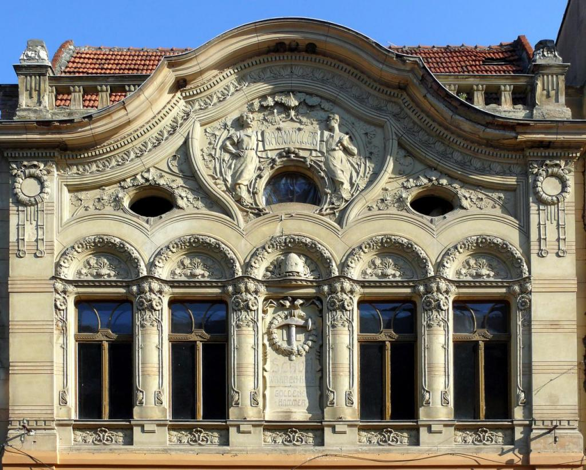
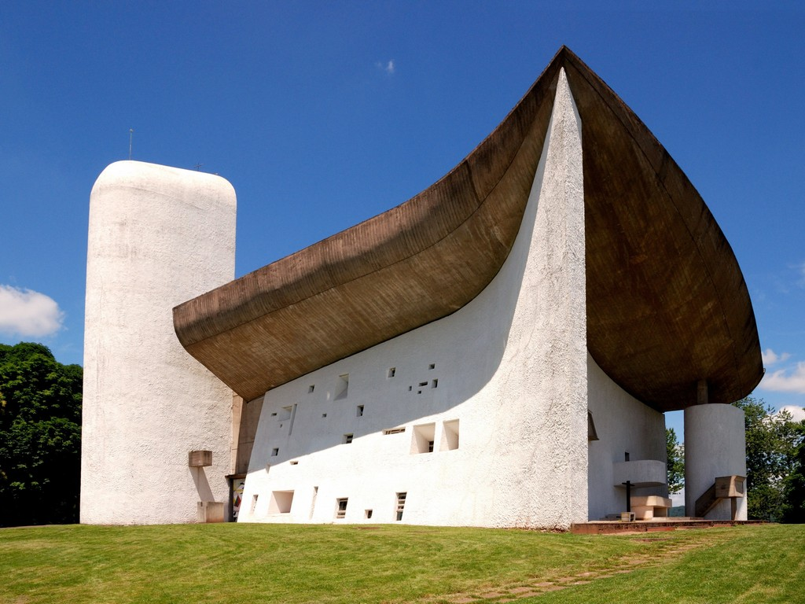
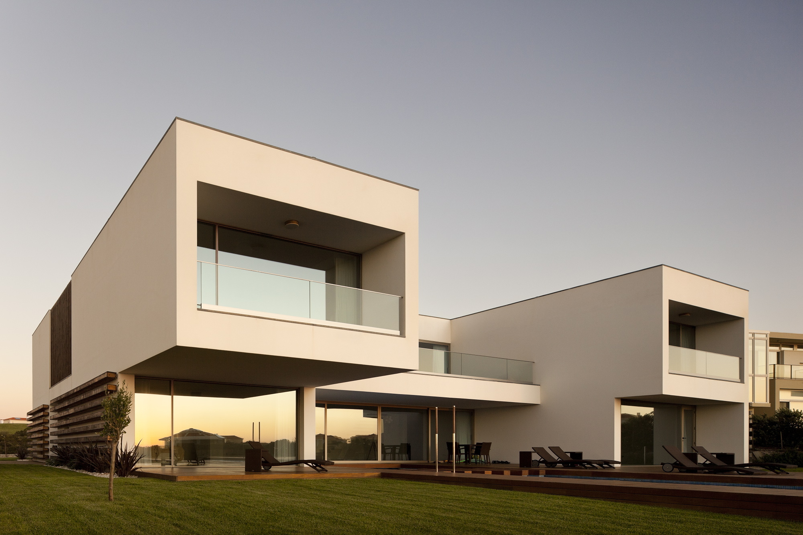
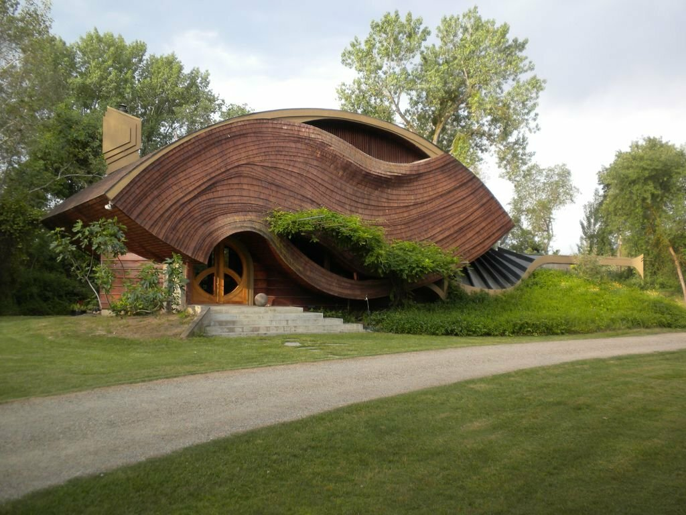

Модерн
Архитектуру модерна отличает отказ от прямых линий и углов в пользу более естественных, «природных» линий,
использование новых технологий (металл, стекло). Данный стиль в англо- и франкоязычных источниках называется
Art Nouveau. В немецких — Jugendstil. Как и ряд других стилей, архитектуру модерна отличает также стремление
к созданию одновременно и эстетически красивых, и функциональных зданий. Большое внимание уделялось не
только внешнему виду зданий, но и интерьеру, который тщательно прорабатывался. Все конструктивные элементы:
лестницы, двери, столбы, балконы — художественно обрабатывались. Одним из первых архитекторов, работавших
в стиле модерн, был бельгиец Виктор Орта (1861—1947). В своих проектах он активно использовал новые материалы,
в первую очередь, металл и стекло. Несущим конструкциям, выполненным из железа, он придавал необычные
формы, напоминающие какие-то фантастические растения. Лестничные перила, светильники, свисающие с потолка,
даже дверные ручки — все тщательно проектировалось в едином стиле. Во Франции идеи модерна развивал Эктор
Гимар, создавший, в том числе, входные павильоны парижского метро. Ещё дальше от классических представлений
об архитектуре ушёл Антонио Гауди. Здания, сооружённые им, настолько органически вписываются в окружающий
пейзаж, что кажутся делом рук природы, а не человека.

Экспрессионизм
Экспрессионизм — архитектура Первой мировой войны и 1920-х годов в Германии («кирпичный экспрессионизм»),
Нидерландах (амстердамская школа) и сопредельных странах, для которой свойственно искажение традиционных
архитектурных форм с целью достижения максимального эмоционального воздействия на зрителя. Предпочтение
нередко отдаётся архитектурным формам, вызывающим в памяти природные ландшафты (горы, скалы, пещеры,
сталактиты и т. п.). Ввиду тяжелого финансового состояния Веймарской республики наиболее смелые проекты
сооружений в духе экспрессионизма остались на бумаге. Вместо строительства реальных зданий многим архитекторам
приходилось довольствоваться разработкой временных павильонов для выставок, а также декораций театральных
и кинематографических постановок.

Конструктивизм
Конструктивизм — советский авангардистский метод (стиль, направление) в изобразительном искусстве, архитектуре, фотографии
и декоративно-прикладном искусстве, получивший развитие в 1920 — нач. 1930 годов. Характеризуется строгостью,
геометризмом, лаконичностью форм и монолитностью внешнего облика. В 1924 году была создана официальная
творческая организация конструктивистов — ОСА, представители которой разработали так называемый функциональный
метод проектирования, основанный на научном анализе особенностей функционирования зданий, сооружений,
градостроительных комплексов. Характерные памятники конструктивизма — фабрики-кухни, Дворцы труда, рабочие
клубы, дома-коммуны указанного времени.

Органическая архитектура
Органическая архитектура — течение архитектурной мысли, впервые сформулированное Луисом Салливеном на основе положений эволюционной
биологии в 1890-х годах и нашедшее наиболее полное воплощение в трудах его последователя Фрэнка Ллойда
Райта в 1920—1950 годах. В противоположность функционализму, органическая архитектура видит свою задачу
в раскрытии свойств естественных материалов и органичном взаимодействии здания с окружающей средой. В
Европе наиболее влиятельным представителем органической архитектуры в Европе был Алвар Аалто. Индивидуализм
органической архитектуры неизбежно вступал в противоречие с потребностями современного урбанизма. В 1950-е
годы и Аалто, и Райт стали отходить от органической архитектуры и в целом перешли к проектированию зданий
в более универсальном, интернациональном стиле.

Хай-Тек
Стиль хай-тек представляет собой символическое отражение века «высоких технологий». Происходит радикальное обновление языка архитектуры под влиянием технического прогресса. Демонстративный супертехницизм:
Индустриальный хай-тек — вынос коммуникаций, индустриальные элементы, перекрытия.
Геометрический хай-тек: поиск новых несущих конструкций зданий, стремление к одной точке опоры здания, вантовые конструкции, тросы, мембраны, мягкие оболочки.
Бионический хай-тек: научные основы, законы и формы живой природы, создание микроклимата.
Слик-тек: глянцевый (преимущественно стеклянный) блеск фасадных поверхностей.
Для стиля хай-тек характерно:
образ здания-машины;
введение символических форм в промышленность и технологию;
создание большого количества индивидуальных объектов, использование работающих технических устройств как знаков;
вынос коммуникаций и конструкций на фасад, структурные плиты, металлические арки, купола, висячие и подвесные системы;
полностью стеклянные фасады и сочетание светопрозрачных элементов с непрозрачными;
функциональность пространства; залы, атриумы, имеющие большие площади и объёмы;
движущиеся конструкции: эскалаторы, траволаторы, панорамные лифты, раздвижные крыши.